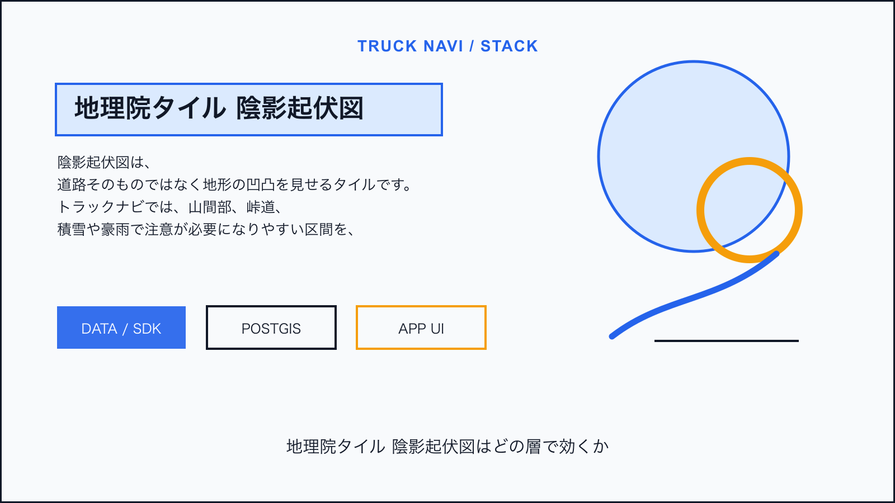
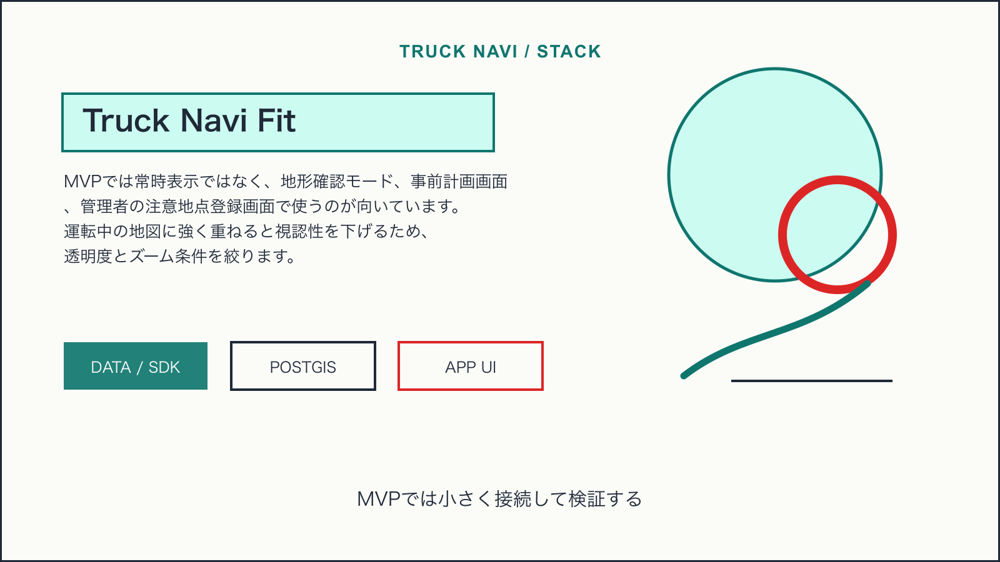
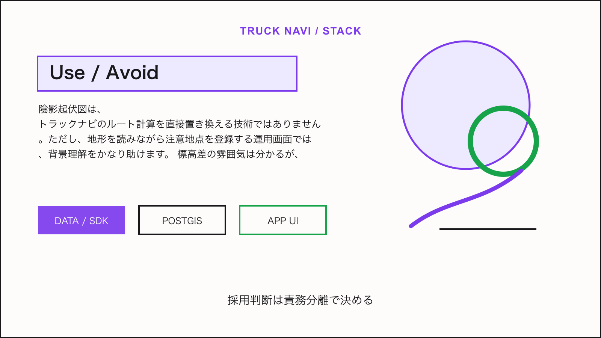

Tech Stack / Truck Navi
地理院タイル陰影起伏図を坂道・地形リスクの補助表示に使う

この技術は何か
陰影起伏図は、道路そのものではなく地形の凹凸を見せるタイルです。トラックナビでは、山間部、峠道、積雪や豪雨で注意が必要になりやすい区間を、通常地図だけでは読み取りにくい背景情報として補えます。
NERV防災のライセンス情報から見える利用形態: 地理院タイル（陰影起伏図）。
トラックナビで使えそうな理由
MVPでは常時表示ではなく、地形確認モード、事前計画画面、管理者の注意地点登録画面で使うのが向いています。運転中の地図に強く重ねると視認性を下げるため、透明度とズーム条件を絞ります。

アーキテクチャ上の置き場所
ベース地図とは別ソースとして陰影起伏図タイルを読み込み、道路、規制、目的地、危険地点のレイヤーより下に置きます。ユーザー設定でオン/オフできる補助レイヤーにします。
Mobile App / Admin UI
↓
Truck Navi API
↓
PostGIS / business data
↓
Map, tile, weather, or device layer採用時の注意点
- 標高差の雰囲気は分かるが、道路勾配や通行可否の根拠には単独で使わない
- 運転中画面ではコントラストを抑える
- 出典表示を地図クレジットに含める
結論
陰影起伏図は、トラックナビのルート計算を直接置き換える技術ではありません。ただし、地形を読みながら注意地点を登録する運用画面では、背景理解をかなり助けます。

Sources
この技術を使っていると表明しているサービス
- NERV防災は、提示されたライセンス情報上で地理院タイル（陰影起伏図）を利用していると表明している。